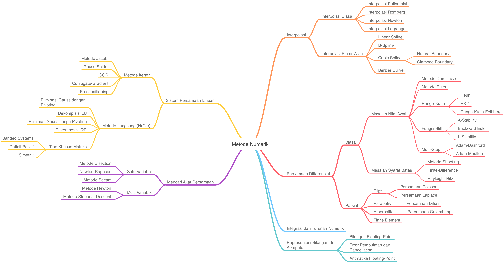

Metode Numerik¶
Tidak semua masalah dalam matematika dan sains dapat diselesaikan secara analitik [Inayah et al., 2020]. Sebagian besar permasalahan di dunia nyata ini dapat dibentuk ke dalam persamaan atau model matematika dan diselesaikan dengan cara pendekatan/aproksimasi terhadap solusi analitik atau eksaknya. Walaupun dengan pendekatan ini tidak dapat menghasilkan solusi eksak, akan tetapi biasanya cukup untuk menyelesaikan permasalahan yang ada [Strang, 2009]. Disamping itu juga, perlu adanya analisis terhadap error yang timbul karena proses aproksimasi. Hal ini dikarenakan solusi melalui aproksimasi atau disebut solusi numerik memiliki ciri khas yaitu finite (berhingga) dan diskrit [Shiflet and Shiflet, 2014].
Metode numerik memfokuskan pada teknik-teknik untuk menyelesaikan berbagai permasalahan matematika secara numerik, menganalisis kekonvergenan dan kestabilan dari tiap-tiap metode yang dipelajari [Anton, 2010].
Modul ini dilengkapi dengan contoh-contoh kasus di dunia nyata yang diselesaikan menggunakan metode numerik dan diimplementasikan ke dalam bahasa Python.
Tujuan¶
Modul ini diharapkan dapat membantu siapa saja untuk menyelesaikan dan menemukan solusi numerik dalam model matematika sederhana, serta dapat menganalisis error dan kekonvergenan dari setiap metode numerik yang dihasilkan dari solusi tersebut, sehingga kita dapat memilih metode mana yang sesuai untuk menyelesaikan masalah-masalah pemodelan matematika sederhana [Boyce et al., 2020].
Materi¶

Representasi Bilangan di Komputer dan Jenis-Jenis Error pada Solusi Numerik
Penyelesaian Persamaan Non-Linear Secara Numerik
Penyelesaian Sistem Persamaan Linear Secara Numerik
Penyelesaian Nilai Eigen dan Vektor Eigen Secara Numerik
Interpolasi dan Pencocokan Kurva
Turunan Numerik
Integrasi secara Numerik
Persamaan Differensial Biasa pada Masalah Nilai Awal
Persamaan Differensial Biasa pada Masalah Syarat Batas
Persmaan Differensial Parsial